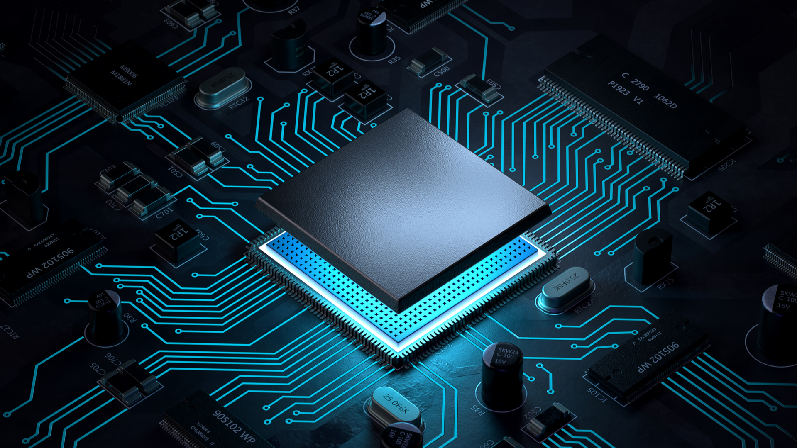

I enjoy building embedded systems using Arduino and ESP32. Through these projects, I have learned how to interface sensors, develop simple automation systems, and troubleshoot electronic circuits.

Figure 1. Arduino-based Embedded Systems Project